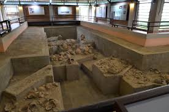
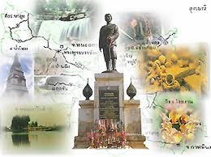
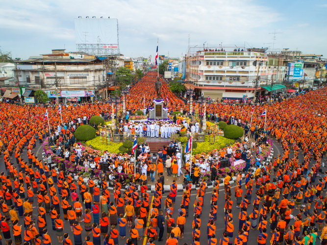

Landmark UdonThani
Landmark UdonThani
Landmark UdonThani
Landmark UdonThani

จังหวัดอุดรธานีเป็นเมืองที่มีประวัติศาสตร์ยาวนาน ตั้งแต่สมัยก่อนประวัติศาสตร์จนถึงการเป็นศูนย์กลางการปกครองที่สำคัญในภาคอีสาน อุดรธานีแหล่งอารยธรรมโบราณ ดินแดนที่เป็นประเทศไทยในปัจจุบันนี้ร่องรอยแสดงว่า ได้เคยมีมนุษย์อาศัยอยู่เป็นเวลานานไม่แพ้แหล่งอื่น ๆ ของโลก อาจจะเป็นเวลานานนับถึงห้าแสนปี ตามหลักฐานการขุดค้นของนักโบราณคดีทั้งชาวไทยและชาวต่างประเทศที่ได้พบแล้ว โดยเฉพาะดินแดนที่เป็นภาคตะวันออกเฉียงเหนือของประเทศไทยนับเป็นแหล่ง ที่สามารถยืนยันได้ เพราะเป็นแหล่งที่มีการขุดค้นทางโบราณคดีที่สำคัญอย่างยิ่งต่อประวัติศาสตร์ความเป็นมาของมนุษยชาติ แหล่งขุดค้นที่สำคัญที่นักโบราณคดีและกอง โบราณคดีกรมศิลปากร ได้ทำการขุดค้นพบในภาคตะวันออกเฉียงเหนือ ซึ่งเป็นที่ยอมรับของนักโบราณคดีระหว่างประเทศว่าเป็นแหล่งที่มีความเจริญทางวัฒนธรรมสูง มาตั้งแต่สมัยก่อนประวัติศาสตร์ ได้แก่ การขุดค้นที่บ้านโนนนกทา ตำบลนาดี อำเภอภูเวียง จังหวัดขอนแก่น และที่บ้านเชียง ตำบลบ้านเชียง อำเภอหนองหาน จังหวัด อุดรธานี โดยเฉพาะอย่างยิ่งการขุดค้นที่บ้านเชียง นับเป็นแหล่งที่มีชื่อเสียงแพร่หลายทางโบราณคดีไปทั่วโลก
จากหลักฐานทางประวัติศาสตร์และโบราณคดีพบว่า บริเวณพื้นที่ที่เป็นจังหวัดอุดรธานีในปัจจุบัน เคยเป็นถิ่นที่อยู่ของมนุษย์มาตั้งแต่สมัยก่อนประวัติศาสตร์ประมาณ 5,000-7,000 ปี จากหลักฐานการค้นพบที่บ้านเชียงอำเภอหนองหานและภาพเขียนสีบนผนังถ้ำที่อำเภอบ้านผือ เป็นสิ่งที่แสดงให้เห็นเป็นอย่างดีจนเป็นที่ยอมรับในวงการศึกษาประวัติศาสตร์และโบราณคดีระหว่างประเทศ ว่าชุมชนที่เป็นถิ่นที่อยู่ของมนุษย์ก่อนประวัติศาสตร์ที่จังหวัดอุดรธานี มีอารยธรรมความเจริญในระดับสูง และอาจถ่ายทอดความเจริญนี้ไปสู่ประเทศจีนก็อาจเป็นได้ โดยเฉพาะอย่างยิ่งเครื่องปั้นดินเผาสีลายเส้นที่บ้านเชียงนั้น สันนิฐานว่า อาจเป็นเครื่องปั้นดินเผาสีลายที่เก่าที่สุดของโลก
จุดเริ่มต้น: เดิมพื้นที่ที่เป็นตัวเมืองอุดรธานีในปัจจุบันคือหมู่บ้านเล็ก ๆ ที่ชื่อว่า "บ้านเดื่อหมากแข้ง"
บทบาทสำคัญ: การก่อตั้งเมืองมีความเกี่ยวข้องกับการเมืองระหว่างประเทศและการจัดการหัวเมืองในสมัยรัชกาลที่ 5
ผู้สถาปนา: พลตรีพระเจ้าบรมวงศ์เธอ พระองค์เจ้าทองกองก้อนใหญ่ กรมหลวงประจักษ์ศิลปาคม (เรียกโดยย่อว่า กรมหลวงประจักษ์ศิลปาคม) ทรงเป็นผู้มีบทบาทสำคัญในการสร้างและวางรากฐานเมือง
การย้ายศูนย์บัญชาการ: ในปี พ.ศ. 2436 (ร.ศ. 112) หลังเหตุการณ์วิกฤตการณ์ ร.ศ. 112 (ความขัดแย้งกับฝรั่งเศส) และการปราบฮ่อ กรมหลวงประจักษ์ศิลปาคม ได้ย้ายกองบัญชาการทหารและพลเรือนจากเมืองหนองคายมาตั้งที่ บ้านเดื่อหมากแข้ง เพื่อให้พ้นจากเขตปลอดทหารตามสนธิสัญญา
การตั้งชื่อเมือง: ในปี พ.ศ. 2450 (ร.ศ. 127) พระบาทสมเด็จพระจุลจอมเกล้าเจ้าอยู่หัว (รัชกาลที่ 5) ทรงมีพระบรมราชโองการให้รวมหัวเมืองต่าง ๆ และจัดตั้งเป็น "เมืองอุดรธานี" ขึ้นที่บ้านหมากแข้ง โดยขึ้นอยู่กับการปกครองของ มณฑลอุดร คำว่า "อุดร" แปลว่า "ทิศเหนือ" ซึ่งหมายถึงการเป็นศูนย์กลางของหัวเมืองฝ่ายเหนือในขณะนั้น
เปลี่ยนสู่จังหวัด: หลังจากการเปลี่ยนแปลงการปกครองในปี พ.ศ. 2475 ระบบมณฑลถูกยกเลิกไป ทำให้ มณฑลอุดร ถูกยุบและคงเหลือเพียง จังหวัดอุดรธานี
สงครามเวียดนาม: อุดรธานีมีการพัฒนาอย่างรวดเร็วในช่วงทศวรรษ 1960 เนื่องจากมีการสร้าง ฐานทัพอากาศสหรัฐฯ (Udorn Royal Thai Air Force Base) ขึ้นในระหว่างสงครามเวียดนาม ซึ่งส่งผลให้เศรษฐกิจและการคมนาคมเติบโตอย่างก้าวกระโดด
ปัจจุบัน อุดรธานีเป็นเมืองศูนย์กลางทางเศรษฐกิจ การคมนาคม และวัฒนธรรมที่สำคัญแห่งหนึ่งของภาคตะวันออกเฉียงเหนือของประเทศไทยค่ะ